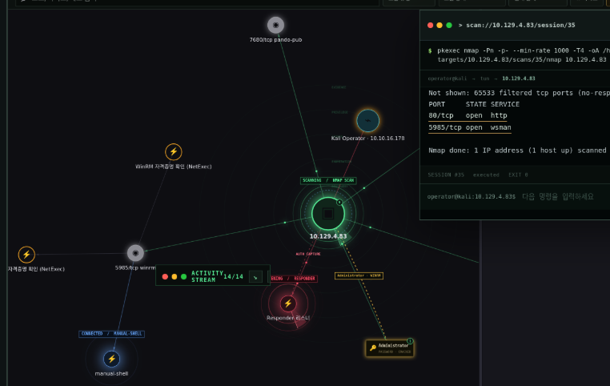

How it is put together구조
An eBPF observer watches the normal Kali terminal, the activity is rebuilt into sessions and commands, and FastAPI stores it with tool results and evidence for the React graph and reports.eBPF observer가 평소 쓰는 Kali 터미널을 관찰하고, 활동을 세션·명령으로 재구성한 뒤 FastAPI가 도구 실행 결과·증거와 함께 저장해 React 그래프와 보고서로 이어집니다.
Progress GraphProgress Graph
Targets, tool runs, credentials and checklist stages are connected in one graph.대상·도구 실행·자격증명·점검 단계를 하나의 그래프로 연결.

Captured in a lab environment.실습 환경에서 촬영.
Recon & web testing정찰·웹 테스트
Nmap service discovery and feroxbuster/ffuf-based directory, virtual-host and parameter fuzzing. HTTP request editing, payload variation, response comparison and proxy capture to verify web behaviour.Nmap 서비스 탐색과 feroxbuster·ffuf 기반 디렉토리·가상호스트·파라미터 퍼징 지원. HTTP 요청 편집·페이로드 변형·응답 비교와 프록시 캡처로 웹 동작 검증.
Authentication & AD checks인증·AD 점검
NetExec-based per-protocol authentication checks and SMB share discovery. Manages the results and evidence of domain checks such as Kerberos user enumeration, AS-REP roasting and Kerberoasting, and constrained delegation (S4U2Self/S4U2Proxy).NetExec 기반 프로토콜별 인증 확인과 SMB 공유 탐색 지원. Kerberos 사용자 열거, AS-REP·Kerberoasting, 제한된 위임(S4U2Self/S4U2Proxy) 등 도메인 점검의 실행 결과·증거 관리.
PoC validation & post-access investigationPoC 검증·접근 후 조사
Manages everything from SearchSploit candidates to the original PoC, working copies, change history and run results. Supports post-access investigation with SSH, WMI and WinRM remote work, LinPEAS analysis and SUID checks.SearchSploit 후보 검색부터 PoC 원본·작업 사본·수정 이력·실행 결과 관리. SSH·WMI·WinRM 원격 작업과 LinPEAS 분석·SUID 점검으로 접근 후 조사 지원.
Credential & hash management자격증명·해시 관리
Records where each obtained account came from and links it to follow-up work. Folds Hashcat and John cracking and DPAPI and LSASS analysis results into the investigation record.획득한 계정의 출처를 기록하고 후속 작업에 연결. Hashcat·John 크래킹과 DPAPI·LSASS 분석 등 자격증명 처리 결과를 조사 기록에 통합.
eBPF-based execution-flow reconstructioneBPF 기반 실행 흐름 복원
Collects process, TTY I/O, socket and file events, and rebuilds the command flow from process lineage, session and time. Records event loss and confidence, and keeps the raw record when attribution is unclear.프로세스·TTY 입출력·소켓·파일 이벤트를 수집하고 프로세스 계보·세션·시각을 기준으로 명령 흐름 재구성. 이벤트 손실·신뢰도를 기록하고 귀속이 불명확한 활동은 원본 보존.
Investigation paths & reports조사 경로·보고서 연결
Connects targets, runs, credentials, evidence and findings in the Progress Graph and tracks check progress with runbooks. Snapshots evidence sources, SHA-256 hashes and the chosen paths, and exports reports such as PDF and DOCX.대상·실행·자격증명·증거·Finding을 Progress Graph로 연결하고 Runbook으로 점검 진행 관리. 증거 출처·SHA-256과 선택한 경로를 스냅샷으로 보관해 PDF·DOCX 등 보고서로 내보내기.